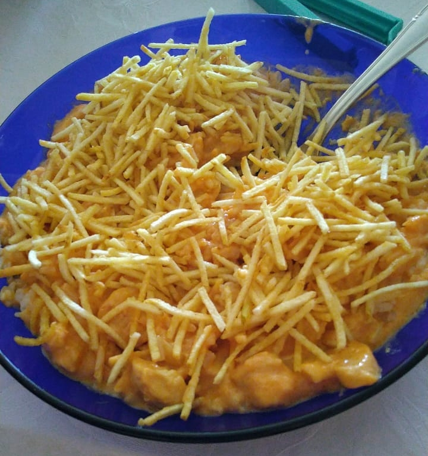

Strogonoff

Easy to make strogonoff recipe for five, with easy to find ingredients
Ingredients
- 1kg chicken breast
- 3 garlic cloves
- 2 lemons
- 3 tablespoons of butter
- 2 medium sized onions
- 200g of diced champignon mushrooms
- 600ml milk cream
- 200ml milk
- 1 tablespoon of cornstarch
- 1 tablespoon of worcestershire sauce
- 5 tablespoons of ketchup
- 1 tablespoon of mustard
- salt
- black pepper
Steps
Clean the chicken breast and let it rest for 30 min in a lemon juice and water solution.
- Dry the chicken thoroughly and dice it in cubes
- Season the chicken cubes with salt. Rub crushed garlic on it and let it rest
- Cut the onions however preferred, though julienne is recommended for a stronger onion taste
- Add the butter to the pot over a low fire and let it melt
- Add the onions and let them caramelize a bit before adding the chicken
- Turn the heat to high and add the chicken cubes. Mix the chicken with the onions. Add the black pepper
- Stir the chicken every 10min or so until golden browned
- Lower the heat to light and add the mushrooms and stir until they're lightly fried.
- Add the worcestershire sauce, the mustard and the ketchup and mix them until homogenous
- Mix the milk with the cornstarch and add it to the pot. Mix it until homogenous
- Add the milk cream and mix until homogenous. Let it cook on low heat until it starts to boil
- Serve it with white rice and fries of your choice